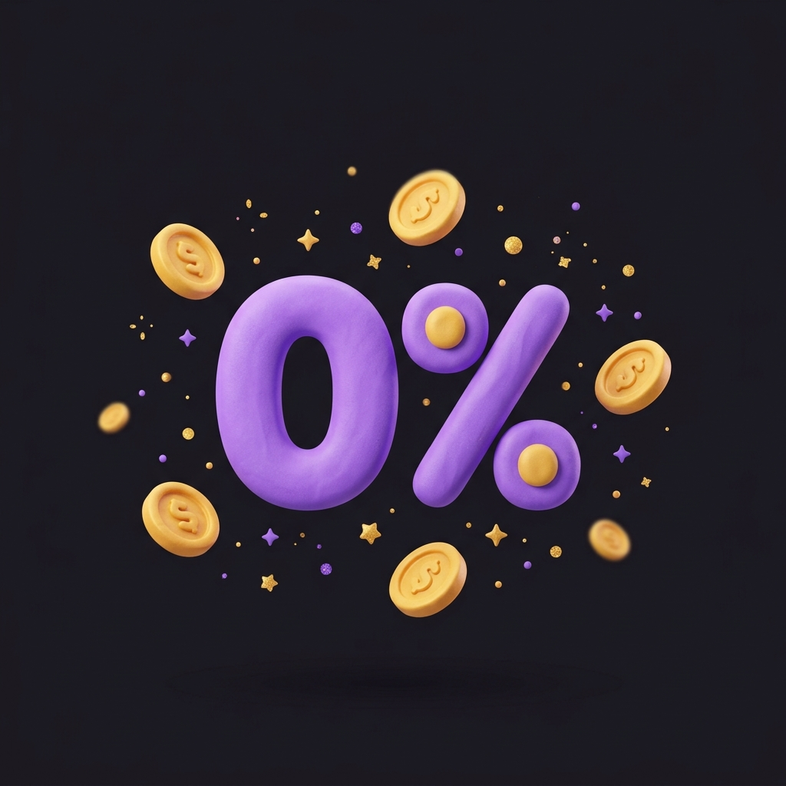
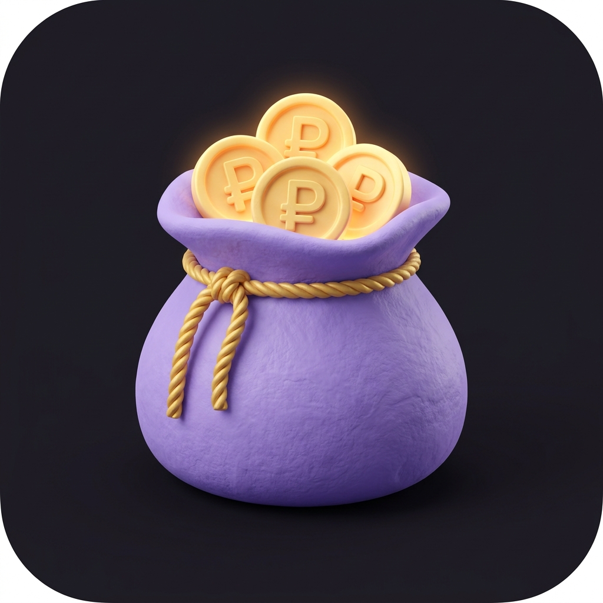
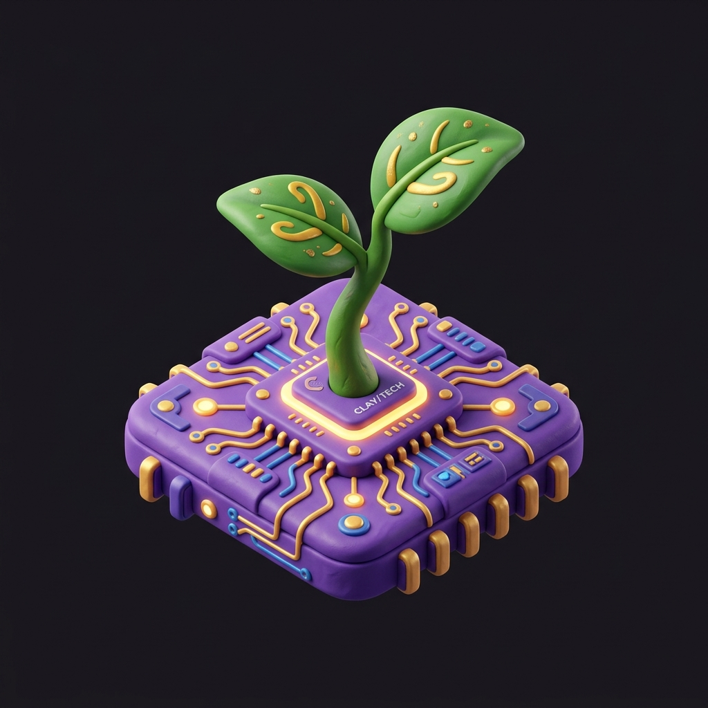
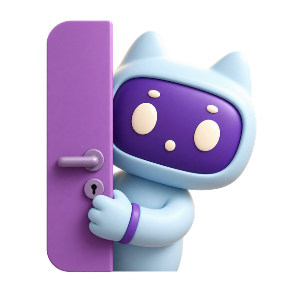

Презентация новых сторис Т-Банка, вертикального сертификата А4, 4-шагового онбординга, 3 вариантов стрелок и обновленных карточек перед финальным внедрением в код.
1. Сторис в стиле Т-БанкаСогласовано
Иллюстрация в правом верхнем углу, темный фон, белый текст в левом нижнем углу. Тонкая обводка 2px. Первые три — активные (цветной контур), четвертая («Агро-старт») — пример просмотренной (серая, ушла вправо).
Новинки навигатора 2026

Налоговые льготы 0% для бизнеса

Гранты до 300 000 ₽ в регионе

Агро-старт: субсидии и земля
2. Варианты стрелок фактовВыбери вариант
Стрелки с правильными отступами (кончик стрелки 100% не срезается контейнером):
Вариант A: Мягкая 3D-стрелка (Clay)
Плавный скругленный объем, тени в стиле маскотов
Вариант B: Зигзаг с четким острием
Энергичный ломаный ритм, острый треугольный кончик
Вариант C: Минималистичный золотой шеврон
Строгая геометрия, чистый нативный вид
3. Кнопка теста бизнеса3D Плашка
Вместо невзрачного текста со стрелочкой — объемная золотая 3D SVG-кнопка в стилистике START:
Пройти квиз
4. Карточки мер со стикерами и маскотамиНа Главной
3D-стикеры прикреплены прямо к карточке (в правом верхнем углу) и скроллятся вместе с ней. Маскоты увеличены во всю высоту кнопки. Подложка тега строго по ширине текста:
Старт
С чего начать
Чек-лист ИП
Гранты
Грант 300 000 ₽
Для молодых
5. Нижние сервисы на ГлавнойНовые плитки
Добавлен сервис «Стажеры» с иконкой студента/человечка. Перерисован калькулятор с четкими кнопками и экраном:
Налоги
Документы
Калькулятор
Стажеры
6. Вертикальный Сертификат А4Лист А4 ровно
Книжный вертикальный лист (пропорция 1 : 1.414). Официальное обрамление, золотая печать ZVERY, криптоподпись SHA-256 и кнопки «Скачать PDF» и «Отправить в MAX»:
ZVERY БИЗНЕС-НАВИГАТОР · ОБРАЗОВАТЕЛЬНЫЙ ТРЕК

Памятный сертификат готовности
Анастасия
Успешно подтверждены базовые знания в сфере налогообложения, выбора мер государственной поддержки и запуска бизнеса в 2026 году.
Результат: 100%№ ZV-CERT-2026-A1B29.09.2026
SHA-256: 4f8b2c1d9e3a7f05...e8a2b7c4d1f903
*Сертификат носит информационно-поощрительный характер, подтверждает прохождение обучающего теста в ZVERY Business Navigator и не является документом государственного образца об образовании или квалификации.
7. 4-шаговый ОнбордингПошаговый мастер
Разбивка на 4 коротких шага. Для роли «Пока только планирую» рекомендуются стартовые гранты и курсы, для «Стажер» — фиксируется факт профиля:
1. Город2. Статус3. Налог4. Цель
Самозанятый (НПД)
Налог 4–6%, доход до 2.4 млн ₽, без отчетов
Индивидуальный предприниматель (ИП)
ИП на УСН, патенте или АУСН
Пока только планирую
Изучаю варианты, хочу открыть дело с нуля
Стажер / Ищу практику
Студент или начинающий специалист
8. Каталог грантов: Шкала времениБез фейков
Убраны фейковые проценты заявок. Слева — дата старта, справа — дедлайн, полоска заполняется по шкале приближения дедлайна: